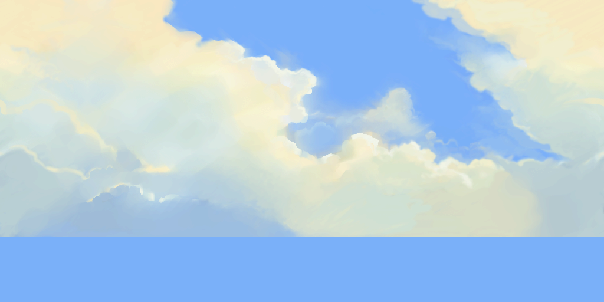
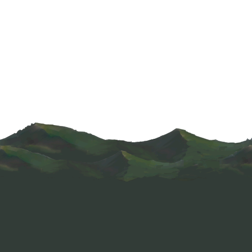
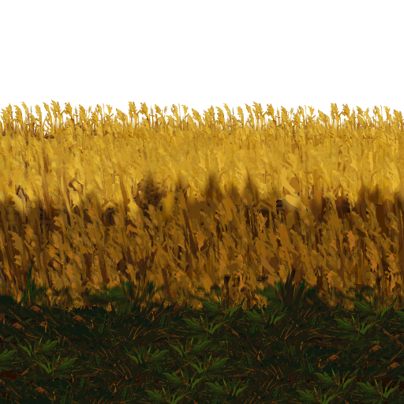
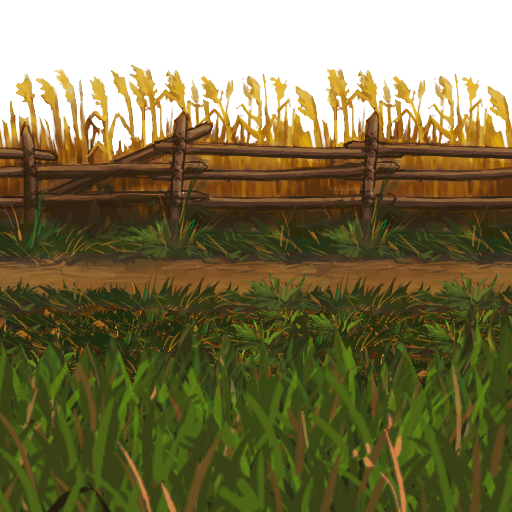
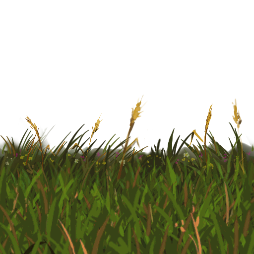
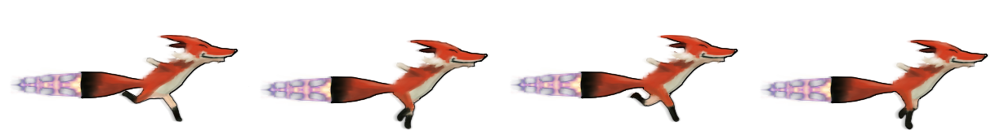

Runfield themes are made up of five level images, two character animation images and a character shadow image.
The level images are moved across the screen at different speeds, creating a pseudo-3D parallax effect.
To make your own theme, you need to make your own versions of the theme images and save them in a directory on a web server. To use your theme, add ?theme=mythemedirURL to the Runfield URL.
Here's a zip with the template images to get you started.
The theme images should be 512 pixels high and have a width divisible by 16.
sky.png is the background layer. It scrolls slowly at a rate of single pixel per second.

horizon.png is the layer in front of the sky.

background.png is the layer in front of the horizon. On fast machines, there are actually two background.png layers which are scrolled at different speeds.

path.png is the layer on which the character runs.

foreground.png is the layer drawn in front of the character and the path.

run_frames.png has the running animation for the character. It has 20 frames. The frames progress from up to down, and the columns are from left to right.
boost_frames.png has the boosting animation for the character. It has 4 frames. The frames progress from left to right.

shadow.png is the shadow of the character

Start off with a sketch of the background.
Then paint the theme. Paint the different parallax levels on separate layers to make it easier to cut them out.
Adjust color curves and make a comp with the character to visualize how it'll look in-game.
Cut the layers into separate images and make them horizontally tileable (duplicate layer, move one layer to the left and another to right so that their ends meet, merge layers, paint over the discontinuity). Do whatever other adjustments you want. Test the theme in-game. Tweak tweak. Adjust character sprite colors to match the level.
Done! Party time!

{kind=link}
{kind=link}
{kind=link}
{kind=link}
{kind=link}